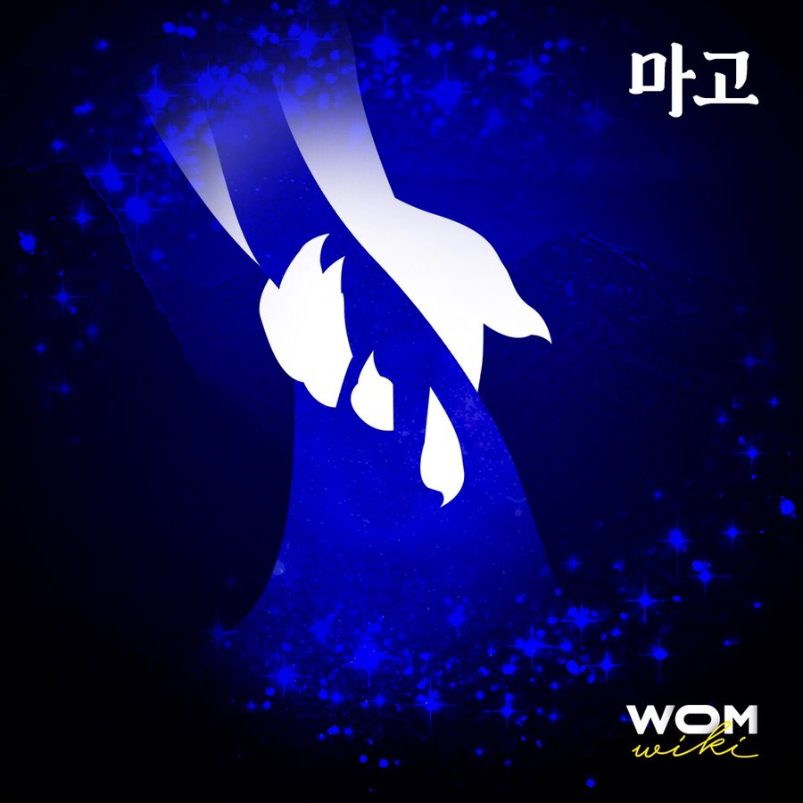

태초의 산을 짓고 강과 바다를 만든 거인신. 옛날부터 구전을 통해 전해 온 우리 나라만의 창세신화의 주인공이다.

마고는 화려한 무기와 거창한 수법으로 세상을 만들었다기 보단 일상의 작은 행동들로 세상을 창조했다. 흙을 담고 가던 옷이 찢어져 산이 만들어졌고, 한 번의 발길질로 강을 만들고 배설물로 바다와 섬을 만들었다.
제주도의 설문대할망과 육지의 개양할미, 서구할미 등 지역별로 마고할미는 변형되었다. 제주도의 설문대할망 설화에서 설문대할망은 자신이 만든 바다에 빠져서 죽는 어리석은 인물로 묘사되었고, 서구할미는 사람들을 해치는 악인으로 묘사되었다. 단군신화에서도 마고는 단군에게 쫓겨났다고 전해진다.
세상을 만든 창조신인 마고가 악인 또는 어리석은 인물로 묘사된 이유로는 동아시아에서 가부장 사회가 형성됨에 따라 모계 사회의 중심이었던 마고문화가 퇴출되었다는 주장이 가장 유력하다. 모계 사회에서 부계 사회로 변화하며 마고할미의 영향력은 점점 감소하게 되었고, 여성거인신이 세상을 만들었다는 창세신화는 부정되었다. 구전으로 전해온 마고의 이야기 역시 민간전승으로 구분되었다.1
창세의 주인공 마고할미는 험상궂은 마귀할멈이 되어 원망과 퇴치의 대상으로 변모하였다. 거창한 호칭을 가지고 있는 다른 고대국가의 창세신화에 비해 현재까지 불리는 호칭으로 미루어보아 다소 과소평가 받고 있다는 점은 부정할 수 없다. 마고 '할멈' 이라는 호칭은 어떻게 보아도 창조신에게 쓸 만한 것은 아니다.
현재 마고는 무속의 굿판에서만 존재하며, 사람들은 세상을 만든 마고를 마귀할멈으로만 기억하고 있다.
가부장제 사회가 번성함에 따라 거인신에서 할멈으로, 창조신에서 마귀의 존재로 그 위용을 잃은 마고를 이제는 마귀할멈이 아닌 창조신으로 새롭게 기억해야 할 것이다.
여성위키 전설 속의 여성들 콘텐츠 중 마지막으로 소개된 여성이다.